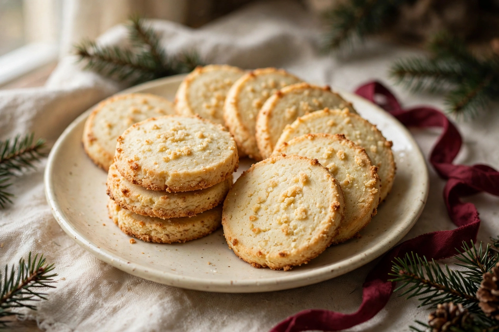

Plätzchen ohne Ei – 5 einfache Rezepte
Kein Ei im Haus, eine Allergie in der Familie oder einfach Lust auf unkompliziertes Backen? Diese 5 Rezepte kommen ganz ohne Ei aus – und schmecken so gut, dass niemand etwas vermissen wird.

Inhaltsverzeichnis
1. Mürbeteig-Plätzchen (Grundrezept)
300 g Mehl, 200 g kalte Butter, 100 g Zucker und 1 Prise Salz verkneten, 30 Minuten kalt stellen, ausrollen, ausstechen und bei 180 °C 10 Minuten backen.
2. Kokosmakronen ohne Ei
200 g Kokosraspeln mit 150 g gezuckerter Kondensmilch mischen, kleine Häufchen formen und bei 160 °C 12–15 Minuten goldgelb backen.
3. Haferflocken-Kekse
150 g Haferflocken, 100 g Mehl, 100 g geschmolzene Butter, 80 g braunen Zucker und 1 TL Zimt mischen, Löffelkleckse aufs Blech setzen und bei 175 °C 12 Minuten backen.
4. Erdnussbutter-Plätzchen
250 g Erdnussbutter mit 150 g Zucker und 4 EL Milch verrühren, Kugeln formen, mit der Gabel flach drücken und bei 175 °C 10 Minuten backen.
5. Schoko-Plätzchen
200 g Mehl, 150 g Butter, 100 g Zucker, 30 g Kakao und 2 EL Milch zu einem Teig kneten, Rollen formen, Scheiben schneiden und bei 180 °C 10–12 Minuten backen.
Tipp
Teige ohne Ei sind etwas empfindlicher: gut gekühlt verarbeiten und die Plätzchen erst auskühlen lassen, bevor du sie vom Blech nimmst.
Plätzchen Rezepte auf Pinterest